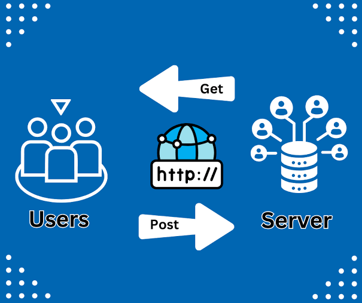

1.¿Sobre que protocolo binario esta montado el protocolo HTTP?
HTTP funciona sobre TCP como protocolo de transporte. En el material se muestra la pila como HTTP/1.1
sobre TCP e IP. HTTP/2, en cambio, utiliza una representación binaria de sus mensajes, pero conserva la
semántica de HTTP/1.1. Por lo tanto, si la pregunta apunta al protocolo de transporte, la respuesta es
TCP; si apunta a HTTP/2, se trata de un protocolo HTTP con frames binarios.
2.¿Cuales son los clientes HTTP y los servidores mas utilizados?
El material menciona como clientes HTTP a los navegadores, CURL y las librerías nativas de distintos
lenguajes de desarrollo. Como servidor menciona al Web Server y ejemplifica Apache. También aclara que
Tomcat no es un web server, sino una JVM. La diapositiva no presenta un ranking de los más utilizados;
por eso no se puede afirmar un ranking basándose exclusivamente en el archivo.
3.¿Qué verbos admite un comando en el requerimiento HTTP?
El material menciona GET, POST, CONNECT, DELETE y PUT. GET se utiliza para lectura; PUT para crear
recursos; DELETE para borrar recursos; POST normalmente para actualizar recursos, según el material.
CONNECT es utilizado por los proxies.
4.¿Qué contenido lleva el body de un requerimiento HTTP?
El body puede contener datos en cualquier formato. En un ejemplo de envío de formulario mediante POST,
contiene las variables del formulario. También puede transportar datos ingresados en formularios o
archivos enviados mediante un proceso de upload.
5.¿Qué diferencia existe entre un URL y un URI?
El material indica que la URI identifica el recurso, por ejemplo /index.html o /clientes. También aclara
que el campo URL del navegador contiene el conjunto http://nombreHost.dominioHost:puerto + URI. En
términos generales, una URI identifica un recurso, mientras que una URL es una URI que además
proporciona la localización o forma de acceder a ese recurso.
6.¿Cómo se almacena información relacionada con las respuestas HTTP?
Una forma indicada en el material son las cookies. Una cookie es un pequeño dato que el servidor envía
al navegador mediante un header de respuesta; el navegador lo guarda y posteriormente lo envía
nuevamente al mismo servidor junto con una nueva petición. También existe información almacenada en
caché, como los recursos y sus ETag, que permiten comprobar si un recurso cambió.
7. ¿Qué significa HTTP sobre conexiones preexistentes?
Significa que HTTP puede realizar múltiples transacciones utilizando una conexión TCP persistente ya
abierta, en lugar de abrir y cerrar una conexión para cada recurso. HTTP/1.1 incorpora este mecanismo y
utiliza el header Connection: keep-alive para solicitar que la conexión se mantenga abierta mientras sea
posible.
8. ¿Qué significa Virtual Hosting?
Es la posibilidad de que un mismo servidor web atienda múltiples dominios utilizando una única dirección
IP. HTTP/1.1 incorpora el header Host, que permite indicar el host virtual de destino. El servidor debe
estar configurado para atender esos hosts y los nombres deben estar registrados en DNS.
9 ¿Qué significa Cache por ETag?
Es un mecanismo de caché en el que cada recurso del servidor posee un identificador o ETag que funciona
como una especie de huella del recurso. El navegador guarda ese ETag y lo envía posteriormente mediante
If-None-Match. El servidor compara el valor recibido con el ETag actual. Si el recurso no cambió,
responde que no fue modificado y el navegador utiliza la copia que ya tiene en caché. El material
destaca que este método no depende de posibles errores en la configuración de fechas del servidor y del
cliente.
10. ¿Por qué el HTTP se considera STATELESS?
HTTP se considera stateless porque cada requerimiento es independiente y el protocolo no conserva por sí
mismo el estado de una interacción anterior. El material indica que, al no haber más conexión, cualquier
aplicación pierde el estado. Para mantener información entre solicitudes pueden utilizarse mecanismos
como cookies y caché.
11. ¿Qué nueva versión de HTTP se está usando para mejorar la velocidad de la WEB?
El material señala que HTTP/2 comenzó a utilizarse desde 2015 y mejora el rendimiento mediante
multiplexación de requerimientos y respuestas, frames binarios, compactación de headers y priorización
de elementos. También presenta HTTP/3, publicado en 2019, que utiliza QUIC sobre UDP y busca mejorar
especialmente el establecimiento de conexiones y la recuperación ante problemas de conectividad.
12. ¿Cómo va a mejorar el comportamiento de una aplicación WEB en ambientes ruidosos o de débil
conexión?
HTTP/3 utiliza QUIC sobre UDP. Según el material, QUIC realiza funciones que TCP no aporta directamente
a UDP, pero de una manera más eficiente, permitiendo transferencias fiables, seguras y con mayor
capacidad de reconexión. Por eso HTTP/3 mejora especialmente la capacidad de recuperación y el
comportamiento cuando existen caídas, ruido, congestión o cobertura deficiente. El beneficio principal
señalado por el material no es solamente la velocidad, sino la posibilidad de reconectarse rápidamente
ante fallas de comunicación.
Imagen representativa de HTTP

Video representativo de HTTP
El video trata de explicar qué es HTTP y para qué lo utilizamos.